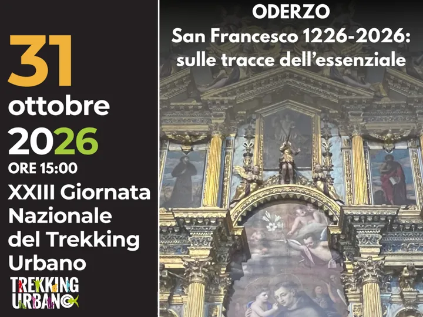

sab 31 ott
Giornata Nazionale del Trekking Urbano
Ritorna la Giornata Nazionale dedicata al Trekking Urbano, una forma di turismo sostenibile e responsabile che promuove la riscoperta delle città attraverso percorsi pedonali tematici. Si tratta di una pratica che unisce attività fisica, valorizzazione del patrimonio…
 Indicazioni
Indicazioni
- Costi e prenotazioni
- Costo non indicato · Prenotazione non indicata
- Programma
- Programma da verificare. Apri la fonte ufficiale per orari e possibili aggiornamenti.
- In caso di maltempo
- Nessuna indicazione specifica pubblicata.
- Note
- Acquisito automaticamente dalla fonte.
L’EVENTO
Descrizione completa
Ritorna la Giornata Nazionale dedicata al Trekking Urbano, una forma di turismo sostenibile e responsabile che promuove la riscoperta delle città attraverso percorsi pedonali tematici. Si tratta di una pratica che unisce attività fisica, valorizzazione del patrimonio storico-artistico e attenzione all’ambiente urbano. A differenza del trekking tradizionale, quello urbano non richiede particolari preparazioni o attrezzature ed è adatto a persone di tutte le età.
La Giornata Nazionale del Trekking Urbano , che si celebra ogni anno il 31 ottobre , è un’iniziativa promossa a livello nazionale con l’obiettivo di sensibilizzare cittadini e visitatori sull’importanza di un turismo sostenibile e accessibile.
Anche quest'anno il Comune di Oderzo, in collaborazione con l'Ufficio Turistico, aderisce all'iniziativa con il trekking urbano “San Francesco 1226-2026: sulle tracce dell’essenziale”. Lungo l’itinerario opitergino saranno visitati alcuni dei luoghi più emblematici della città, in cerca delle tracce lasciate dal Santo di Assisi nel mondo e, in particolare, nel territorio: la Chiesetta di San Giuseppe, il Duomo con la Cappella di San Francesco e l’Altare di Sant’Antonio di Padova, il secentesco Oratorio di Palazzo Tomitano e tanti altri luoghi.
Un percorso di circa 2.00/2h e mezza, di circa 3 km di lunghezza e di difficoltà bassa, adatto a tutti.
Punto di partenza presso l'Ufficio IAT - Via Giuseppe Garibaldi, 65 c/o Palazzo Foscolo, 31046 Oderzo TV alle ore 15:00.
Prenotazione obbligatoria fino ad esaurimento posti.
IL PROGRAMMA
Programma e orari
Appuntamenti raccolti dalle fonti elencate. Dove manca un orario, non è ancora disponibile in questa scheda.
Programma pubblicato
- 2026-10-31 — 2026-10-31 · 15:00:00
INFORMAZIONI UTILI
Prima di partire
- Controllare la fonte prima di partire.
ORGANIZZAZIONE